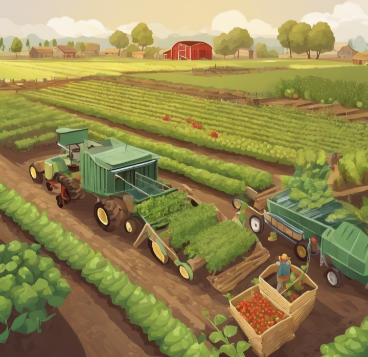
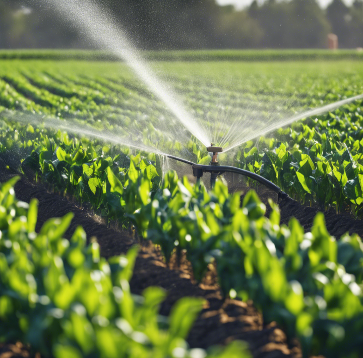
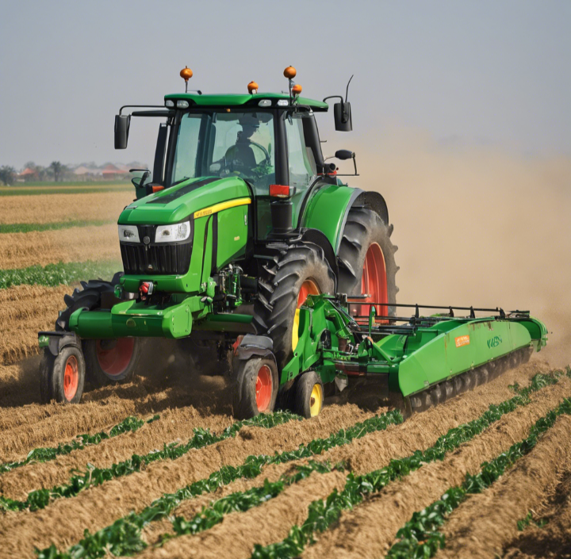
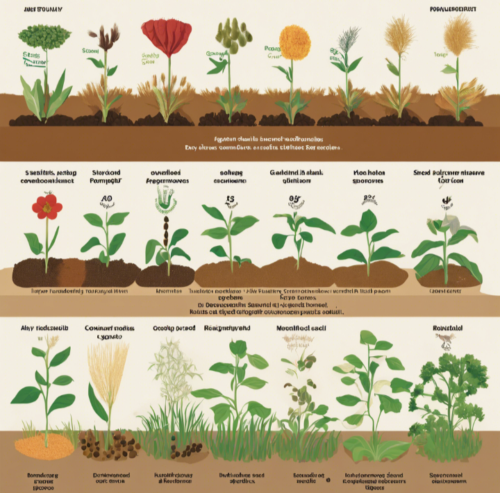
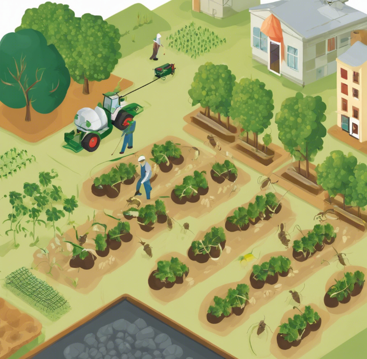
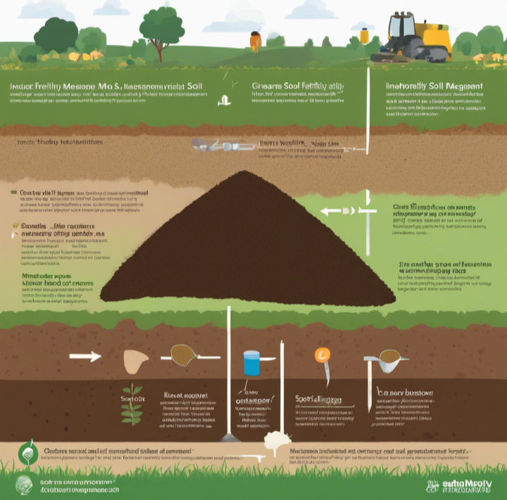
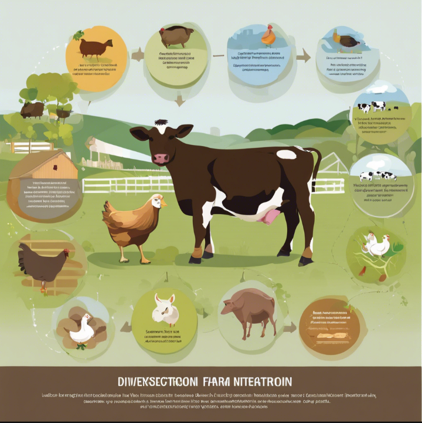
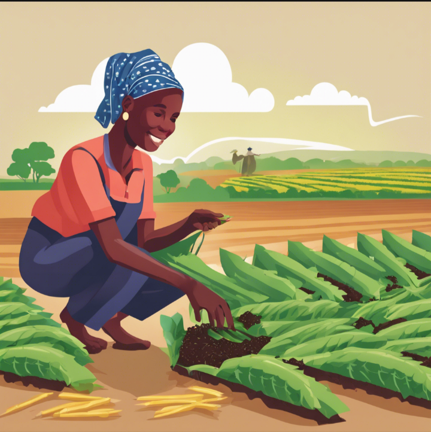
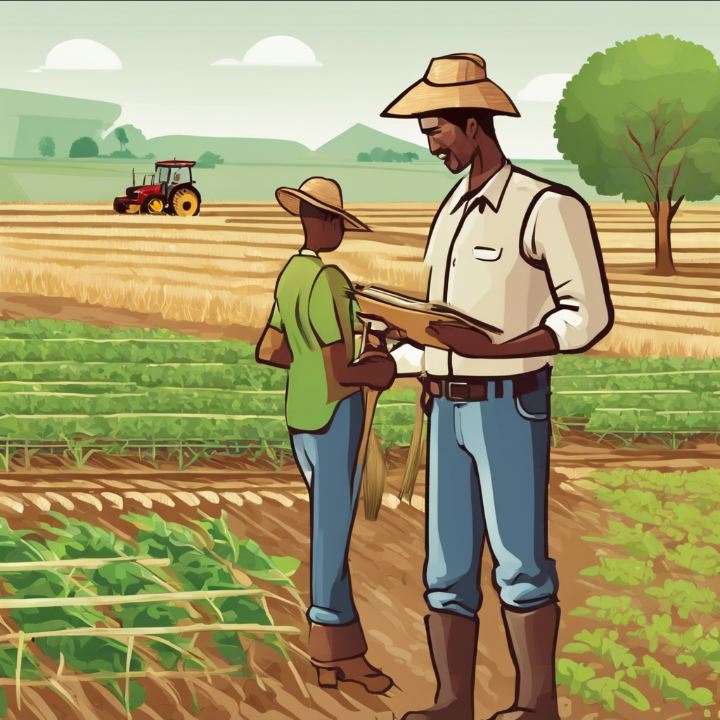
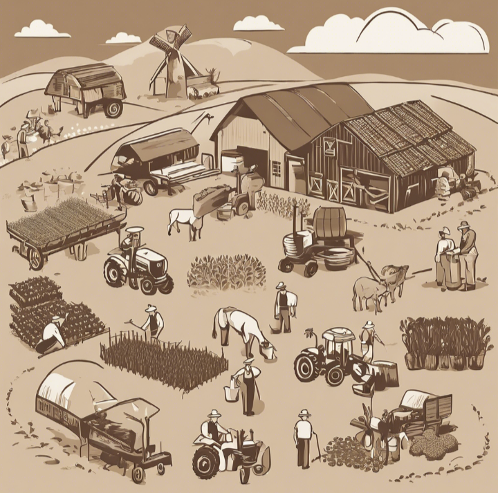

Introduction
Agriculture is a crucial sector in Nigeria, contributing significantly to the country's economy and providing employment for a large portion of the population. To enhance agricultural development, various methods have been implemented over the years.
Develop a small farm to produce a large crop.
|

To develop a small farm into a larger and more productive food production system, there are several methods and approaches that can be implemented. Here are some examples and methods of agricultural development that can be applied in Nigeria: |
|

1. Irrigation systems: Implementing efficient irrigation systems, such as drip irrigation or sprinkler systems, can significantly increase crop yields and allow for multiple cropping cycles per year, even in areas with limited rainfall. |
|

2. Mechanization: Introducing modern agricultural machinery and equipment, such as tractors, harvesters, and planters, can increase productivity, reduce labor requirements, and improve efficiency. |
|

3. Improved seed varieties: Using high-yielding, disease-resistant, and drought-tolerant seed varieties can boost crop production and enhance resilience to environmental stresses. |
|

4. Integrated pest management: Adopting sustainable pest control strategies, such as biological control, crop rotation, and judicious use of pesticides, can reduce crop losses and minimize environmental impact. |
|

5. Soil fertility management: Implementing practices like crop rotation, intercropping, and the use of organic fertilizers or compost can improve soil health and fertility, leading to higher yields. |

6. Greenhouse farming: Establishing greenhouse facilities can enable year-round crop production, increase productivity per unit area, and provide better control over growing conditions. |
|

7. Livestock integration: Incorporating livestock production, such as poultry, dairy, or aquaculture, can diversify farm operations, provide additional income streams, and enable the use of animal manure as a natural fertilizer. |
|

8. Access to credit and financing: Providing smallholder farmers with access to affordable credit and financing options can enable them to invest in modern technologies, inputs, and infrastructure. |
|

9. Extension services and training: Offering agricultural extension services, farmer education programs, and training on modern farming techniques can equip farmers with the knowledge and skills necessary for sustainable and productive agriculture. |
|

10. Cooperative and collective farming: Encouraging the formation of farmer cooperatives or collective farming initiatives can facilitate resource sharing, bulk purchasing of inputs, and access to markets, thereby improving economies of scale. It's important to note that agricultural development is a multifaceted process, and a combination of these methods, tailored to the local context and resources, may be necessary for successful and sustainable growth in food production. |
Methods of Agricultural Development
- Mechanization
- Irrigation
- Improved Seed Varieties
- Fertilizer Application
- Pest and Disease Control
- Extension Services